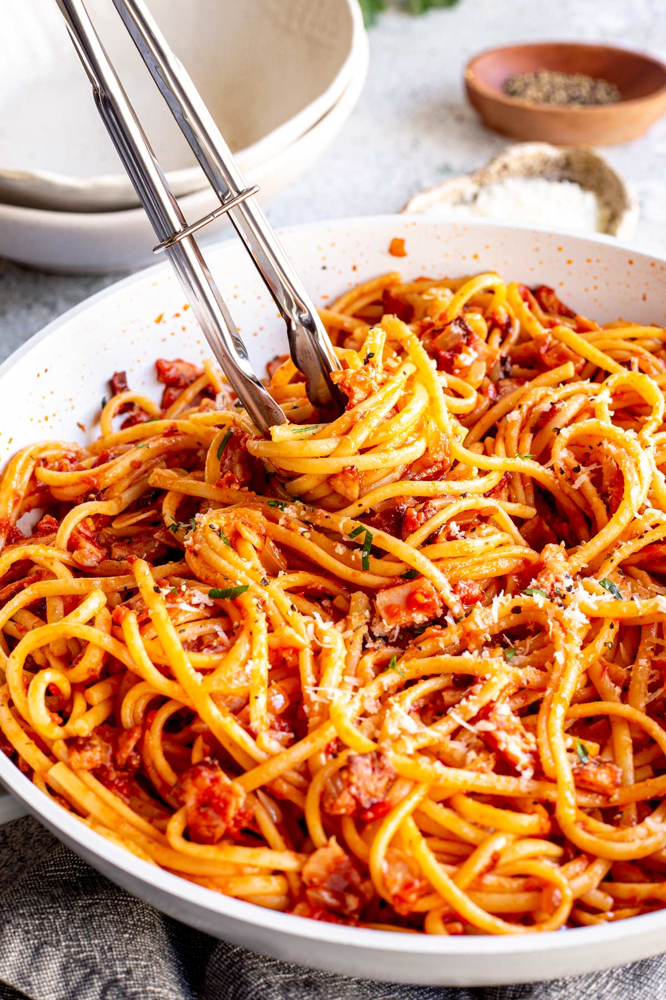

Tomato Bacon Pasta

Description
About as simple a recipe that you can get, this mainly just requires bacon, chopped tomatoes, and pasta! So this recipe is great in a pinch and is quick to make.
Using this recipe as a base, you can add and alter as much as you need for your situation. Bacon can be replaced with any meat really, or even a can of beans to make it vegan! Any extra vegetables can also be added, making this recipe very adaptable indeed.
Ingredients
Serves 2
- Pasta (2 cups)
- Oil
- 150g Bacon
- Garlic Granules
- 1/2 Onion
- Can of Chopped Tomatoes
- Salt and Pepper
- Parsley
Steps
15 minutes
- Heat the oil in a large pan on high heat, and boil the kettle for the pasta
- Meanwhile chop the bacon, onion, parsley, and any other vegetables
- Pour the boiled water into a saucepan with a pinch of salt. When boiling, put in the pasta and heat according to packet instructions minus 2 minutes
- Cook the bacon for 1 minute, then add the onion, garlic, and any other vegetables and cook for 3 minutes
- Transfer 1/2 cup of pasta water from the saucepan into the large pan. Bring to a simmer and stir
- Add the chopped tomatoes, bring to a simmer, and cook for 2 minutes. Then turn down to medium-high heat
- Drain the pasta and transfer it to the large pan. Toss gently for 2 minutes
- Season with salt and pepper to taste
- Serve with parsley. Feel free to add parmesan cheese too!